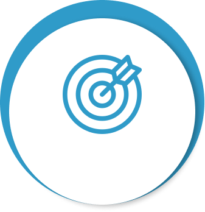
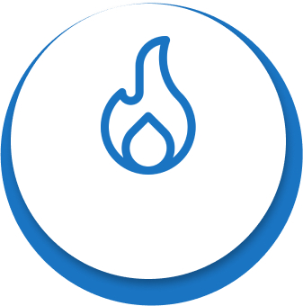
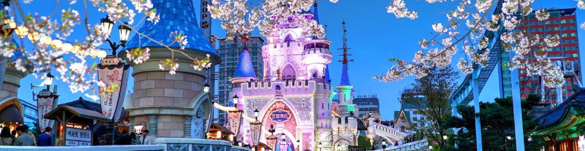

Home
>
인재채용
>
인사제도
인사제도
Personnel System
롯데월드는고객에게 즐겁고 특별한 경험을 제공하여
오랫동안 간직할 수 있는 행복한 추억을 만들어준다는 기업미션을 가지고 있습니다.
롯데와 함께 행복을 만들어갈 인재를 모집합니다.
인재상


도전하는 인재
열정의 인재
인문학적 인재
- 실패를 두려워하지 않는 도전하는 인재
- 실패를 두려워하지 않고‚ 성공을 위해 도전하는
패기와 투지를 가진 젊은이
- 끊임없이 노력하는 열정의 인재
- 젊음의 무모함이 아닌 진정한 실력으로 성공을
쟁취하기 위해 지식과 능력을 단련시키는 젊은이
- 협력과 상생을 아는 인문학적 인재
- 각자의 능력과 실력을 키우는 일 뿐만 아니라
사회적 존재로서 자신의 역할을 이해하는 젊은이
직무소개
- 파크운영
- 직무내용
- 파크운영은 경영기획‚ 신규사업‚ 경영지원‚ 마케팅‚ 영업부문의 관리직무에 배치되어 영업활성화 및 테마파크 조직 운영의 전반적인 업무를 담당합니다. 파크운영 관리자로 선발된 인재는 경영관리 및 운영 등 각 부문에서 업무를 수행하게 되며‚ 향후 당사의 중심관리자로서 역량을 키워나가게 됩니다.
- 필요자질
-
- 필요 역량 : 성실성‚ 책임감‚ 기획력
- 관련지식 또는 자격증 : 경영‚경제관련 기본지식 / 노무사‚ 회계사 등 경영‚경제관련 자격증
- 관련학과 : 사회과학계열(경영학‚ 경제학‚ 마케팅 등), 법정계열(법학‚정치외교학‚행정학), 인문계열‚ 어문계열 - 배치부서
- 경영기획부문‚ 신규사업부문‚ 지원부문‚ 마케팅부문‚ 영업부문
- 시설관리
- 직무내용
- 시설관리는 시설안전(시설관리‚ 건축‚ 설비‚ 전기‚ 방재)업무에 배치되어 각 종 시설물의 유지 및 보수에 관련된 업무를 담당 합니다. 파크 내 안전점검‚ 사고예방‚ 시설물 유지보수‚ 에너지 절감 등의 업무에 종사하며 기존 건물의 리모델링‚ 증축공사‚ 매장 인테리어 공사 등에 참여합니다. 또한 어트랙션정비 직무는 테마파크에서 가장 중요한 부분 중 하나인 어트랙션의 유지 및 보수를 하는 업무 입니다. 다양한 기종의 유지/보수를 맡고 있습니다. 영업 전 모든 어트랙션에 대하여 일일 예방점검을 시행하고‚고장 및 결함을 사전에 적출하여 이에 따른 원인을 상세히 파악 후 재발방지 대책에 대하여 일일/월간/년간 보수계획을 수립‚ 정비 및 개선함으로써 안전하고 효율적인 운영을 지원 합니다.
- 필요자질
-
-필요 역량 : 책임감‚ 성실성‚ 추진력
-관련지식 또는 자격증 : 건축 등 시설관련 지식 / CAD, 건축기사 등 각종 시설관련 자격증
-관련학과 : 기계‚ 전자‚ 전기‚ 건축공학과- 배치부서
- 시설안전부문